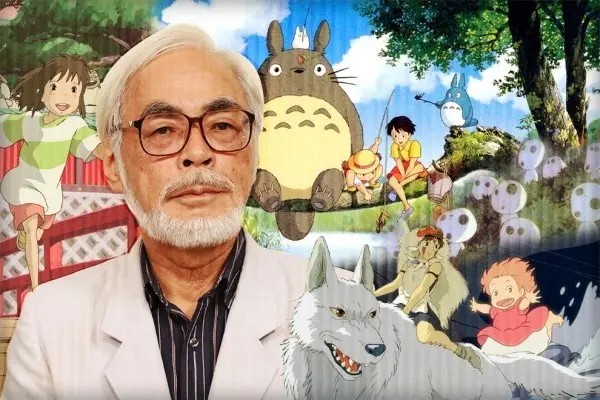

导语：宫崎骏是第一位将动画上升到人文高度的思想者，同时也是日本三代动画家中，承前启后的精神支柱。宫崎在打破手冢治虫巨人阴影的同时，用自己坚毅的性格和永不妥协的奋斗又为后代动画家做出了榜样。
幼年宫崎骏与其母宫崎骏1941年出生于的东京都文京区，毕业于杉并区立永福小学校、杉并区立大宫中学校、东京都立丰多摩高等学校及学习院大学政治经济学院。在四个兄弟中排名第二，父亲是宫崎家族经营的“宫崎航空兴学”的职员。在第二次世界大战中因战时疏散，举家迁往宇都宫市和鹿沼市。
他所在的家族经营一个飞机工厂，属于军工企业，所以战争后期物质匮乏中也能保持颇为温饱的生活，宫崎骏度过了相当自由的幼年生活。然而在这种环境下长大的宫崎骏却意外地对家族的特权产生了怀疑。宫崎骏的父亲告诉他，其实宫崎家族生产的飞机尾翼根本不符合标准，全是些没有经过正规培训的临时女工制作加工的，只需贿赂下军方管理人员，产品就可以蒙混过关。这些在大人们看来无可厚非的把戏，却在宫崎骏的内心留下了抹不去的痕迹，引发了他对人性的思考，影响了他之后从事动画导演的创作风格。宫崎骏自幼由于身体不好，故不擅长运动，也因此对静态的绘画很有天分，特别对于飞机感到兴趣，并成为终身的爱好。
1958年，宫崎骏高中3年级的时候，日本史上第一部彩色动画长片《白蛇传》上映，他开始对动画产生兴趣。
1959年，宫崎骏进入学习院大学政治经济部。大学里面没有漫画社，所以进入了与之最为接近的儿童文学研究会，社员只有宫崎骏一个人。在大学期间他创作了大量的漫画，也曾向贷本漫画出版社投稿，不过作品没有完结。在“安保运动”中宫崎仅仅是一个旁观者，仅仅在最后时刻作为无党派人士参加了一下。
宫崎骏也在思想上开始倾向社会主义，苏联解体对他的思想构成了很大冲击，虽然面对社会主义败北的现实，但是他对劳动者和革命的肯定立场一直没变。宫崎骏在1994年连载完漫画《风之谷》后，决定放弃马克思主义。
由于宫崎骏是次子，有长子继承家业，所以可以按自己喜欢的选择自己的职业。1963年4月宫崎骏进入东映动画公司，从事动画师的工作。宫崎进最初入东映时仅仅是最底层的原画和设计工作。他第一次参与制作的动画是《汪汪忠臣藏》（制作人为白川大作）。因为二战后文艺界充满民主气息，宫崎因此崭露头角。被社内的老前辈大冢康生发现。升职为主要制作人，并担任了东映动画的工会书记长。同年参与了东映首部动画电视剧《狼少年肯》的动画制作。
1964年，书记长宫崎骏在社内开始协助组织工会活动（领导是大冢康生，副委员长是高田勋）。同年被苏联制作的长篇动画《雪之女王》深深的感动，选择动画师作为终生职业。
1965年，工会开始一起制作动画长片《太阳王子霍尔斯的大冒险》，大冢康生为作画监督，当时尚为新人的高田勋被他提拔为监督。由于宫崎骏在工作中起了很大作用，大家为他发明了一个职位：场面设计
1968年，参与《穿长靴的猫》（制作人矢吹公郎，1969年公映）的动画制作，担任原画或场面设计的职务。1969年，他开始在报纸上以秋津三朗的笔名连载短篇漫画《沙漠之民》。这是后来《风之谷》的一点原型。
1971年，宫崎骏在完成《阿里巴巴和四十大盗》后离开东映动画公司，与高田勋、小田部羊一一起从跳槽到大冢康生所在的虫Production动画（后来的“虫制作股份有限公司”）。作为企划《长袜子的皮皮》的主要创作人员之一，宫崎首次出国旅行到苏格兰考察。但该企划因故放弃了，不过这次欧洲村镇的风景出现在宫崎骏之后的很多作品中。同年与高田勋、小田部羊一一起参加了大冢康生主导的TV版《鲁邦三世》第一季的制作。截止至2015年《鲁邦三世》几乎每年都有TVspecial或者剧场版问世，而鲁邦从身居豪宅的大盗变成如今大家熟悉的平民形象，高田勋和宫崎对原作的擅自改编可谓影响深远。
1972年，导演高田勋、作画监督小田部羊一和宫崎骏的组合创作了大量作品，值得一提的是《熊猫家族》。该作品首次以描绘日常生活为主，是高田勋以后的新风格的第一次尝试。
1966年10月，由于工会和资方谈判待遇和劳动条件的活动干扰了工作，《太阳王子霍尔斯的大冒险》制作中断。1967年1月，该片继续制作，1968年7月正式放映。